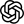
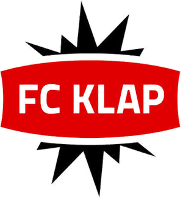
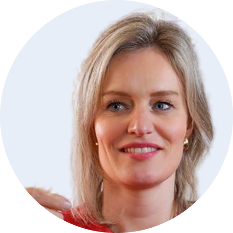
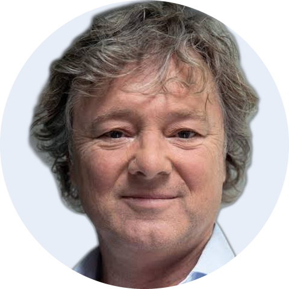
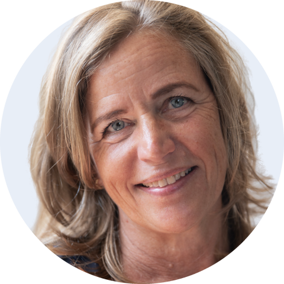

Generative Engine Optimization:
vindbaar zijn in de chatbots
vindbaar zijn in de chatbots
Wanneer gaat de verplichte AOV voor zzp'ers in?
AI-antwoord
Het wetsvoorstel ligt bij de Tweede Kamer. Een startdatum staat nog niet vast; op zijn vroegst 1 januari 2030.
1zelfstandigondernemers.nl
ChatGPT Gemini
Gemini ClaudeCopilot
ClaudeCopilotVersie 1.0 · oktober 2026

StrategieSEO en GEO kennisbank
Van zoekresultaat
naar bron
Zzp'ers stellen hun vragen over AOV en pensioen steeds vaker aan AI. Dit plan maakt de kennisbank van Zelfstandig Ondernemers de bron die AI citeert.
DoelstellingDrastisch meer AI-citaties en betere vindbaarheid op de vangnetonderwerpen.
6 tot 8artikelen per maand
Zichtbaar in
ChatGPT, Gemini, Claude en Copilot
en Google AI Overviews
en Google AI Overviews
Start
1 november 2026
20 zoekwoorden, daarna 6 tot 8 artikelen per maand
20 zoekwoorden, daarna 6 tot 8 artikelen per maand
Team
Ysee, Vincent en Wendy
met de vakexperts van ZO
met de vakexperts van ZO
Contact
Sten Bossong
projectleider, Flii Media
projectleider, Flii Media
Flii Media × Zelfstandig Ondernemers · vertrouwelijk
Zelfstandig Ondernemers · SEO en GEO
Onderbouwing
Wat AI citeert, waar de kennisbank staat en waar de kans ligt.
Citaten, cijfers, bronnen
+41%
zichtbaarheid door expertcitaten; cijfers +31%, bronnen +27%
GEO-studie Princeton, KDD 2024Antwoord eerst
44%
van de citaties komt uit het eerste derde van een pagina
Growth Memo, 2026Actualiteit
70%
van de geciteerde pagina's is minder dan een jaar oud
AirOps, 2025Genoemd worden
0,7
correlatie tussen merkvermeldingen en AI-zichtbaarheid
Ahrefs, 75.000 merken, 20251
Huidige situatie
- 50 artikelen, zonder thema's en meestal korter dan 250 woorden
- Geen auteur, datum of bronnen, terwijl AI daar bij financiële onderwerpen op let
- Verouderd en dubbel, zoals een blog met 2027 als startjaar van de verplichte AOV
- Eigen producten als schenkkring en pensioen nauwelijks behandeld
- Niet bovenaan op "verplichte aov" en "pensioen zzp"; daar staan Knab, De Zaak en ZZP Nederland
Af te stemmenWie van Zelfstandig Ondernemers levert de expertcitaten?
2
De kans
- Verplichte AOV: de startdatum is onzeker, dus er wordt veel gezocht. Actuele uitleg met bronnen wordt geciteerd.
- Eigen cijfers: inleg, uitkeringen en peilingen heeft niemand anders.
- Geciteerd worden loont: 35% meer organische klikken.
- Het publiek is er al: 44,7% van de Nederlanders gebruikt AI.
Af te stemmenMogen we eigen ledendata publiceren als citeerbare cijfers?
Bronnen: Aggarwal e.a., GEO (KDD 2024); Growth Memo (feb. 2026); AirOps (aug. 2025); Ahrefs (jul. en dec. 2025); Seer Interactive (nov. 2025); Eurostat (2025); Google (okt. 2025); eigen analyse kennisbank en zoekresultaten, 27 oktober 2026.
Flii Media × Zelfstandig Ondernemers · vertrouwelijk
Zelfstandig Ondernemers · SEO en GEO
Onderwerpen en artikel
Zes onderwerpen, elk met een hoofdpagina en korte vraagartikelen. Ca. 76 artikelen in 12 maanden.
Eerst
Verplichte AOV
- Wanneer gaat de verplichte AOV in?
Eerst
Alternatieven voor een AOV
- Wat is een schenkkring en hoe werkt die?
Eerst
Pensioen en sparen
- Hoeveel moet ik per maand opzij zetten?
Daarna
Kosten en dekking
- Wat kost een AOV per maand?
Daarna
Ziek zonder vangnet
- Ik ben ziek en heb geen AOV, wat nu?
Daarna
Regels en zekerheid
- Wat verandert er met de Wet DBA?
Briefing voor elk artikel
Opbouw
- Titel: de vraag van de zzp'er 70%
- Kernantwoord van 40 tot 60 woorden 44%
- 3 tot 5 paragrafen met een vraag als kop, 80 tot 150 woorden
- Tabel of rekenvoorbeeld
- Citaat van de vakexpert +41%
- 3 vervolgvragen en interne links
Zoekwoorden
- Eén hoofdzoekwoord uit de briefing verplichte aov
- Titel: zoekwoord letterlijk Wanneer gaat de verplichte AOV in?
- Url: kort, kleine letters /kennisbank/verplichte-aov-ingangsdatum
- Eerste zin: zoekwoord binnen 15 woorden
- Tussenkoppen: 1 met het hoofdzoekwoord, 2 tot 3 met verwante opt-out, premie
- Meta-omschrijving: zoekwoord en antwoord, max. 155 tekens
- Max. 4 keer, verder synoniemen arbeidsongeschiktheidsverzekering
Lengte en stijl
- 600 tot 1.000 woorden
- B1, korte stellige zinnen
- Elk cijfer met bron +31% / +27%
- Naam redacteur en datum
Bronnen: AirOps (aug. 2025); Growth Memo (feb. en apr. 2026); Aggarwal e.a., GEO (KDD 2024); Google, AI-functies en je website (dec. 2025).
Flii Media × Zelfstandig Ondernemers · vertrouwelijk
Zelfstandig Ondernemers · SEO en GEO
Team en werkwijze
Per teamlid wat er elke maand gebeurt, vanaf 1 november 2026.
Researcher
Ysee
Start, november20 zoekwoorden in kaart
Elke maand
- Zoekwoord per artikel
- Bronnen en cijfers
- Resultaten in het dashboard
Levert per maand6 tot 8 briefings

Redacteur
Vincent
Elke maand
- Verplichte AOV, alternatieven, kosten
- Haalt citaten op bij ZO
- Leest Wendy na
- Publiceert via het CMS
Levert per maand3 tot 4 artikelen

Redacteur
Wendy
Elke maand
- Pensioen, ziek zonder vangnet, regels
- Haalt citaten op bij ZO
- Leest Vincent na
- Publiceert via het CMS
Levert per maand3 tot 4 artikelen


Vakexperts
Zelfstandig Ondernemers
Elke maand
- Citaat per artikel, met naam
- Kunnen artikelen afkeuren
Levert per maand6 tot 8 citaten
Publicerencms.zelfstandigondernemers.nlLogininfo@fcklap.nl
Flii Media × Zelfstandig Ondernemers · vertrouwelijk
Zelfstandig Ondernemers · SEO en GEO
Resultaten
Wat we meten en de projectie tot november 2027.
1
Meten
Bing Webmaster ToolsCitaties in Copilot
Hoe vaak, welke pagina's, welke vragen
Google Search ConsoleVertoningen in AI
Per pagina in AI Overviews en AI-modus
GA4Bezoek en aanmeldingen
Bezoekers uit chatbots en aanmeldingen
Dashboard
Voorwaarden om gevonden te worden
- AI-zoekbots toegelaten
- Tekst direct in de pagina, leesbaar voor AI
2
Projecties
AI-citaties per maand
135
676
1.351
4.730
10.135
Nuokt 2026
Februari2027
April2027
Juli2027
November2027
Bezoekers uit chatbots
10
50
100
350
750
Aanmeldingen
0,2
1
2
7
15
Citatie naar bezoek7,4%klikratio, marktgemiddelde
Bezoek naar aanmelding2%conversie, marktgemiddelde
Citatie naar aanmelding0,15%7,4% maal 2%
Bronnen: Microsoft, Bing Webmaster Tools AI Performance (feb. 2026); Google, Search Console generatieve AI-rapport (jun. 2026); OpenAI, overzicht crawlers; Vercel en MERJ (dec. 2024).
Flii Media × Zelfstandig Ondernemers · vertrouwelijk